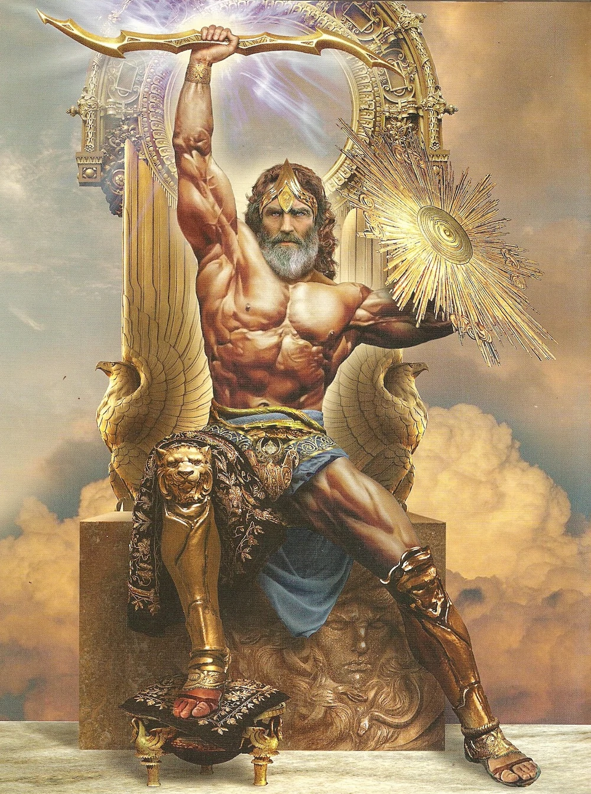

Zeus
Após pensar sobre como se vingaria dos titãs por roubarem a chama divina do Monte
Olimpo, Zeus se depara com algumas ideias para fazer com que sua vingança seja
alcançada, dentre elas uma que seria muito eficaz, onde pedira a outros deuses que
criassem uma mulher perfeita para que fosse enviada para cumprir seu desejo de
vingança contra os titãs e sua criação, a humanidade.